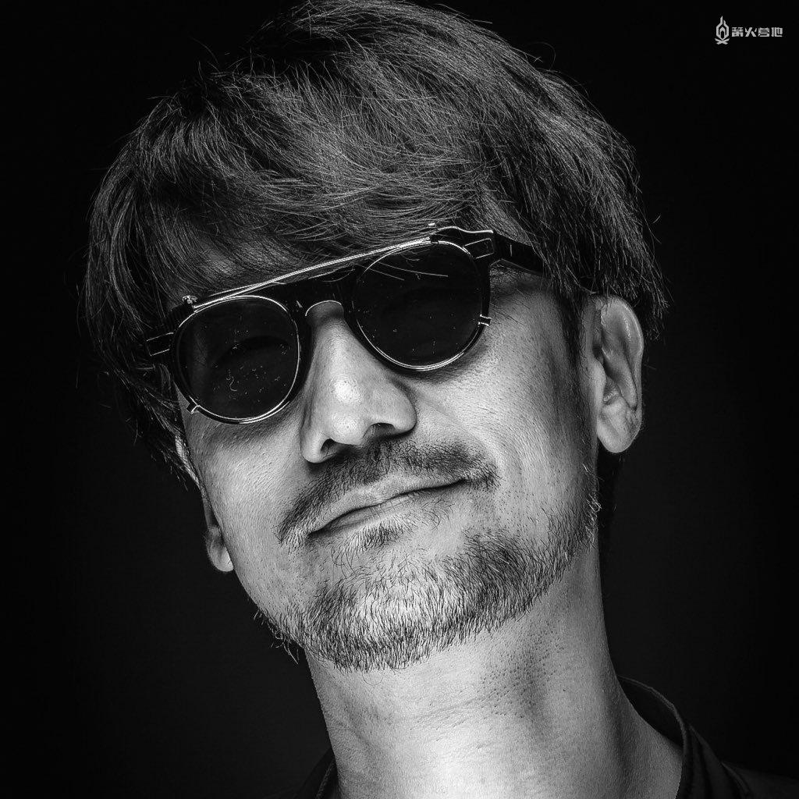
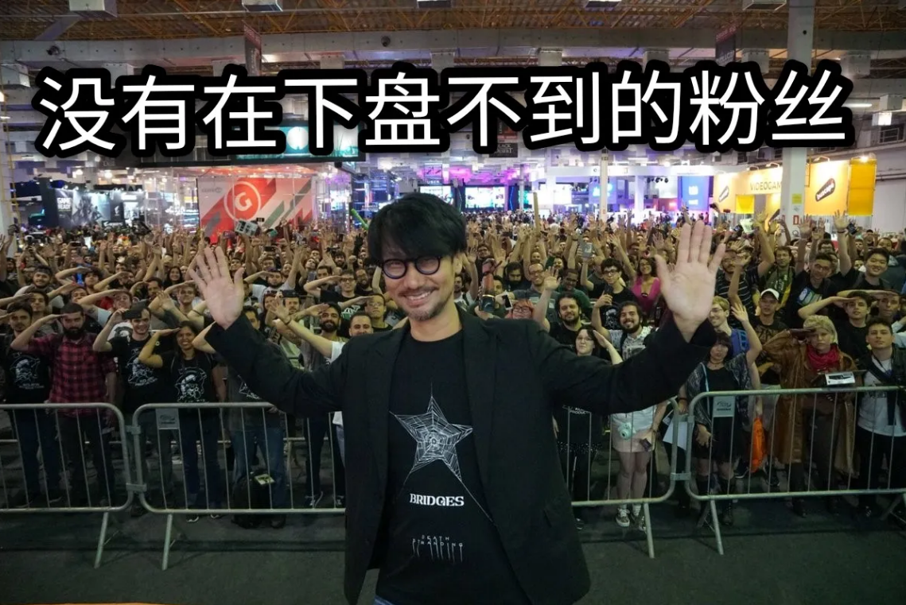
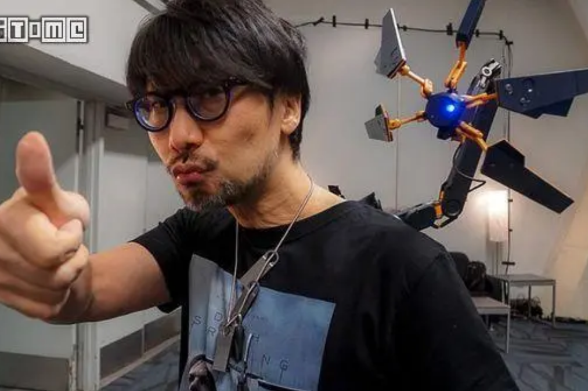
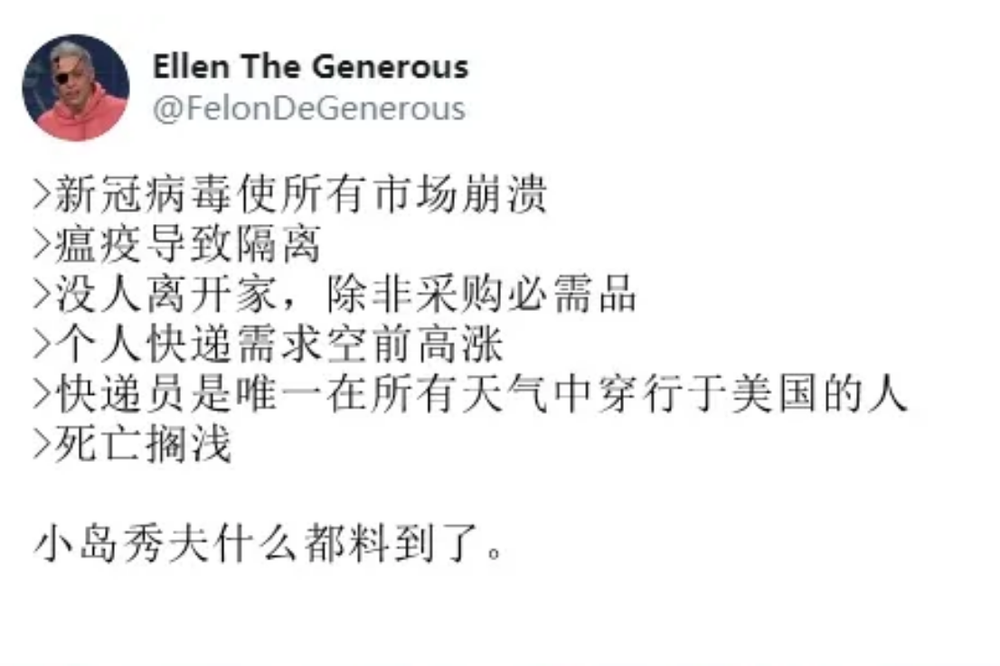
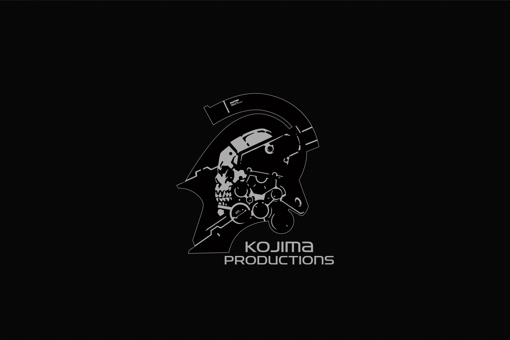
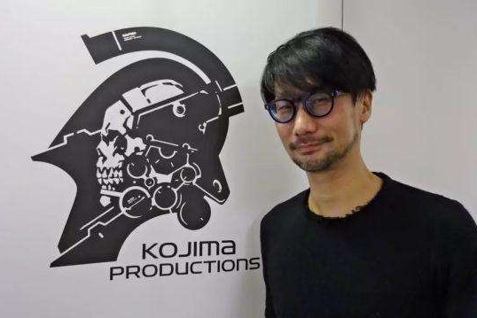

全世界最知名的游戏制作人
1986年，小岛秀夫加入科乐美公司，制作出《合金装备》而名声大噪。
小岛组成为了与任天堂情报开发部、世嘉AM2等业界顶尖开发团队并列的会社。
2001年,《NEW WEEK》杂志将小岛秀夫选入“对未来影响最大的十个人”。
2015年，由于和科乐美不和，著名游戏制作人小岛秀夫正式从Konami离职。
在那之后，小岛秀夫正式建立了全新的小岛工作室kojama productions。
2019年11月8日,小岛秀夫离职风波后制作的第一款游戏《死亡搁浅》发售。
《死亡搁浅》因人们隔离，需要快递员传递物资的设定而饱受争议。
而后新冠疫情爆发。现实的相似再次使小岛秀夫跌向他的“神坛”。
到目前为止，小岛秀夫已经在他的作品中探讨了：
【基因，模因，现在，服从和自我，感知，存在的意义，和平，国家的边界，
种族，失去，链接，生命】
小岛秀夫在Twitter上的自我介绍是，“我的身体内70%是电影”。虽说他的观影嗜好世人皆知，
但考虑到他56岁的“高龄”，你仍然能从这句话中嗅出一股不符年龄的“中二之气”。
小岛秀夫离职后，融资成功是因为一个大银行管理层是他的狂热粉丝； 办公楼合适是因为大楼所属集团高管是他的粉丝；真人演员因为他而主动加入他的团队； 游戏引擎和启动资金都是索尼为他提供。
在小岛秀夫离职后在推特上表露了自己的迷茫，失落与痛苦。而当大家为小岛秀夫的遭遇感到同情的时候， 发现这条推特下发写着：没有什么陪伴着我，只有我银行卡里的两亿美金。




